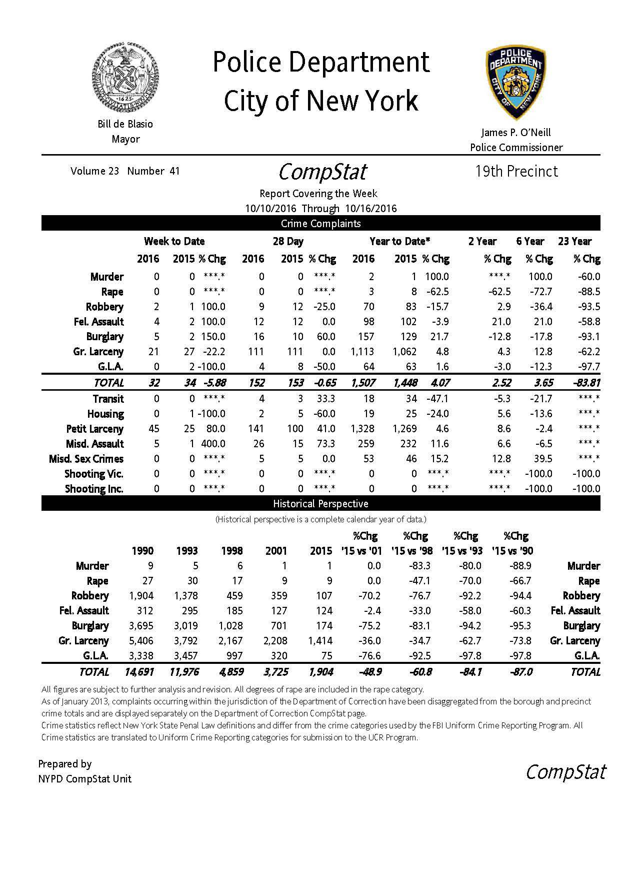

Suspect Still at Large
A man grabbed a 19-year-old Hunter student’s buttocks as she got out of a downtown 6 train at the 68th Street station on August 29. He followed her onto campus but when she noticed him behind her, he fled.
The police have made no arrests – yet. The suspect was described as a bald, African American male in his 40s, 5-feet-10 inches, and was last seen wearing a blue T-shirt, light-colored shorts and a backpack. Footage of a security camera obtained by this reporter from the NYPD shows the man bypassing the turnstile as well as a security officer without the suspect using a required Hunter identification card.
The fact that it was so easy for the suspect to enter campus caused concern and the security guard was fired.
An official statement by the College’s Office of Communications, saying that the College was “reviewing the situation and continues to make every effort to ensure the safety of the entire Hunter community.” The director of Public Safety, Joseph D. Foelsch, provided specifics through Eileen Sullivan, a spokesperson from the public relations office.
“The Public Safety Department provided immediate training to all officers regarding the protocols for allowing individuals entrance to the college,” said Foelsch.“ A more in depth training regimen is ongoing. There are plans for the installation of additional cameras and for the hiring of additional staff.” No specifics about the training and alleged in-depth training were provided.
Foelsch also said that a request for a retrofit for the College turnstiles was awaiting a proposal from a manufacturer to prevent the turnstiles from being opened manually. Furthermore, the officer in charge of that entrance the day of who was fired had been distracted while assisting a student with directions, according to Foelsch. Public Safety officers searched the College once the incident was reported but did not find the suspect. A report was made to the 19th Precinct of the NYPD, located a block from campus at 157 East 67th Street, but this reporter was told that the precinct was not allowed to comment on an ongoing investigation.
A NYPD DCPI spokesperson said police were asking for the public’s assistance in identifying the suspect and that there were no further developments on the investigation. Students interviewed by this reporter did not express particular concern with security on campus, but Kaela Murphy, 20, an English literature major, said, “I’m more concerned with the fact that he got in, and the fact that I didn’t know about it.”
Murphy also said that students should have been notified that an intruder was on campus, or at least informed of the incident at some point, since she did not know of the trespassing until September 12. Several attempts were made by a WORD reporter to contact College President Jennifer Raab for comment, but all requests were were redirected to Eija Ayravainen, Dean of Students and Vice President of Student Affairs. Ayravainen, however, redirected the requests to Foelsch and Colleen Barry, Director of the Office of Student Conduct. “Although I am the Dean of Students, I do not handle security on a daily basis,” Ayravainen told the WORD reporter. Foelsch agreed to an interview and there was no response from Barry.
Undergraduate Student Government did not release an official statement about the incident, but Student Welfare Commissioner Hubba Manzoor, told a WORD reporter, “USG plans to continue our sexual assault awareness initiative.”
“We are currently underway of planning the campaign for this school year and would welcome and be open to whatever input or ideas the student body or really anyone within the Hunter College community would have,” said Manzoor, the only USG representative willing to go on record. USG President Mel Balaguera and Vice President Matthew LoCastro were not available for comment even after five attempts to contact them at their offices and one attempt to contact them through email. During the fifth attempt, a front desk employee at the USG office told WORD reporter Nida Ali, “Matthew doesn’t want to give you the interview.”
Much of the Hunter community seemed oblivious to the incident since it had not been widelyreported, though the story originally reported by CBS was published with the headline, “Hunter College Community Disgusted After Man Gropes Student, Follows Her To Class.” The WORD editor criticized the CBS story for insufficient and sloppy reporting and sensationalism and assigned a team of WORD reporters to do a follow up. CBS, according to the WORD editor, did not interview any school officials and failed to accurately report on the gravity of the situation.
WORD reporter Jenna Read visited CBS New York to get comments about its journalistic approach to the story. The direct attempt to speak to the CBS New York editorial team was refuted and multiple phone calls were not returned.
On September 21, media studies major Evelina Baranovskaja, 23, dressed in a sleeveless polka dot top and a white skirt, said that she read the CBS article and was aware of the incident. She said that Hunter students and all NYC schools should have been notified of the trespass. “I wish there was more than one security guard by the entrance, especially during the peak hours” she said, “it’s easy to get distracted by too many people.”
Sex Crimes in New York City
It is usually in large crowds when sexual assaults like groping, take place. On June 20, Joseph Fox, Chief of Transit for the NYPD, said 458 sex crimes have been reported in the New York subway system in 2016, a 53 percent increase from reports made in 2015. These reports include unwanted touching, public lewdness and the taking of unwanted or surreptitious videos or photos, but these numbers do not include rape, which are typically one or two a year, according to Fox.
One day after Fox reported the report, New York Governor Andrew Cuomo sent a letter to the Metropolitan Transportation Authority Chairman, Thomas Prendergast, regarding the safety of subway riders. He said that the rising numbers in reports of sexual offenses “completely unacceptable” and said that “we cannot and will not allow these crimes to persist.” Gov. Cuomo ordered the MTA to use more plainclothes officers to “crack down on this sort of depraved behavior.”
Below are recent stats frm the 19th Precinct.
